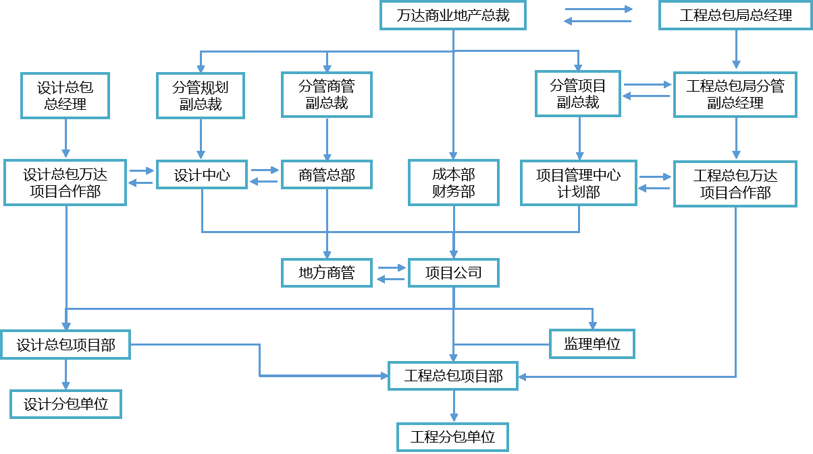

在BIM总发包模式下万达、设计总包和工程总包共同参与模块计划的执行、填报和确认，形成完整的计划管理体系。
BIM总发包模式下计划管理体系架构图
模块计划是指导项目开发建设的重要依据，万达、设计总包、工程总包、监理单位四方均需按照模块计划规定的工作时限及完成标准完成各自负责的工作，同时万达负责监督协调各方按计划执行，并对完成情况进行考核。
| 参建单位 | 主要职责 |
| 万达 |
1.负责整体计划监控，监督设计/工程总包按计划履约； 2.提示计划执行风险并督促纠偏； 3.协调解决各方计划争议。 |
| 设计总包 |
1.负责按照合同及模块计划完成图纸及模型设计及相关配合工作，对设计计划执行负全责； 2.按照万达计划管理要求配置相应管理架构及人员，调配资源确保计划按时完成； 3.按照模块计划编制分项设计计划并督办设计分包落实。 |
| 工程总包 |
1.负责项目工程计划及验收计划的全面管控和执行工作，对工程计划完成负全责； 2.按照万达计划管理要求配置相应管理架构及人员； 3.解决分包计划争议，协调资源纠正计划偏差； 4.应用BIM技术对工程计划和施工方案进行推演，制定合理分项工程计划并督办分包单位落实。 |
| 监理单位 |
1.负责工程总包计划执行监督； 2.应用BIM技术审核工程总包专项计划和施工方案，并监督工程总包按照执行； 3.预判工程总包计划执行风险并提醒纠偏。 |